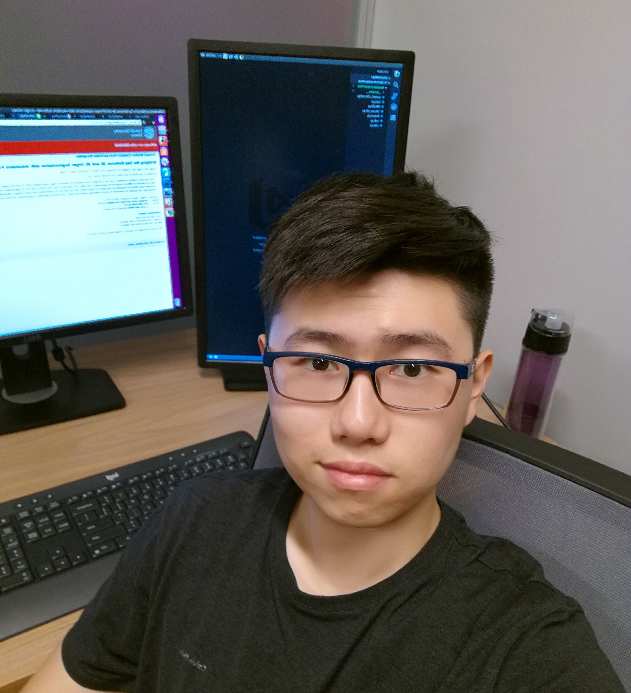

Yingda Xia
Ph.D. Student
Department of Computer Science, Johns Hopkins University
Email: philyingdaxia AT gmail DOT com
Short Bio
I'm a PhD student at Johns Hopkins University. My advisor is Bloomberg Distinguished Professor Alan Yuille. My research interests are computer vision and medical imaging. Currently, I'm focusing on building applicable deep learning algorithms for large-scale, general-purpose medical pre-screening. Before my PhD life, I obtained my B.E. at Tsinghua University in 2017. I did internships at Nvidia (2018) and MSRA (2017).
Publications
-
3D Semi-supervised Learning with Uncertainty-aware Multi-view Co-training
Yingda Xia, Fengze Liu, Dong Yang, Jinzheng Cai, Lequan Yu, Zhuotun Zhu, Daguang Xu, Alan Yuille, Holger Roth
In Winter Conference on Applications of Computer Vision (WACV), 2020
[arXiv] -
An Alarm System For Segmentation Algorithm Based On Shape Model
Fengze Liu, Yingda Xia, Dong Yang, Alan Yuille, Daguang Xu
In International Conference on Computer Vision (ICCV), 2019
[arXiv] -
Multi-Scale Coarse-to-Fine Segmentation for Screening Pancreatic Ductal Adenocarcinoma
Zhuotun Zhu*, Yingda Xia*, Wei Shen, Elliot K. Fishman, Alan L. Yuille
In International Conference on Medical Image Computing and Computer Assisted Intervention (MICCAI), 2019
[arXiv] -
Iterative Reorganization with Weak Spatial Constraints: Solving Arbitrary Jigsaw Puzzles for Unsupervised Representation Learning
Chen Wei, Lingxi Xie, Xutong Ren, Yingda Xia, Chi Su, Jiaying Liu, Qi Tian, Alan L. Yuille
In Conference on Computer Vision and Pattern Recognition (CVPR), 2019
[arXiv] -
Bridging the Gap Between 2D and 3D Organ Segmentation with Volumetric Fusion Net
Yingda Xia, Lingxi Xie, Fengze Liu, Zhuotun Zhu, Elliot K. Fishman, Alan L. Yuille
In International Conference on Medical Image Computing and Computer Assisted Intervention (MICCAI), 2018
[arXiv] [code] -
Joint Shape Representation and Classification for Detecting PDAC
Fengze Liu, Lingxi Xie, Yingda Xia, Elliot K.Fishman, Alan L.Yuille
arXiv Preprint
[arXiv] -
A 3D Coarse-to-Fine Framework for Automatic Pancreas Segmentation
Zhuotun Zhu, Yingda Xia, Wei Shen, Elliot K. Fishman, Alan L. Yuille
In International Conference on 3D Vision (3DV), 2018
[arXiv]